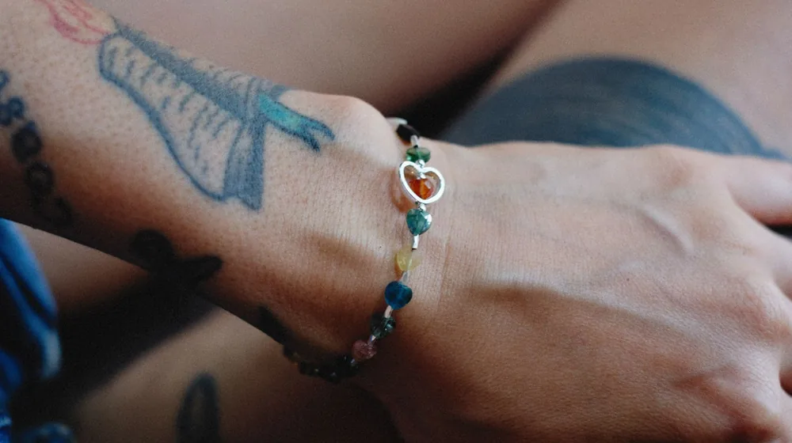
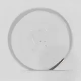

체형별 옷 코디 공식: 내 몸이 예뻐 보이는 실전 체형 진단과 코디법
사진: MART PRODUCTION / Pexels (무료 이미지, 출처 표기)
1. 내 체형은 무엇일까? 3초 간단 자가 진단법

내 체형에 맞지 않는 옷을 입어 부해 보이거나 왜소해 보인 경험이 있으실 겁니다. 유행하는 옷을 무작정 사기 전에 내 체형의 특징을 이해하면 단점을 가리고 장점을 극복하는 코디가 가능해집니다.
거울을 보고 어깨, 허리, 골반의 너비를 비교해 보세요. 가장 직관적으로 내 실루엣을 파악할 수 있는 대표적인 5가지 체형 특징은 다음과 같습니다.
- 모래시계형: 어깨와 골반 너비가 비슷하고 허리가 잘록하게 들어간 체형입니다.
- 삼각형(하체발달형): 어깨에 비해 골반과 허벅지 주변 라인이 더 넓고 발달한 형태입니다.
- 역삼각형(상체발달형): 골반에 비해 어깨가 넓고 가슴이나 등 상부가 부각되는 체형입니다.
- 직사각형(H라인): 어깨, 허리, 골반의 너비 차이가 크지 않아 실루엣이 일자로 떨어집니다.
- 원형(O라인): 상하체에 비해 허리와 복부 주변에 볼륨감이 집중된 체형을 말합니다.
2. 5대 체형별 베스트 & 워스트 코디 비교
각 체형의 특징에 따라 단점을 보완하고 장점을 극대화할 수 있는 의류 매치법이 다릅니다. 아래의 비교표를 참고해 장롱 속 옷들을 정리해 보세요.
3. 체형의 단점을 보완하는 3가지 실전 스타일링 법칙
체형 진단을 마쳤다면 이제 옷을 입을 때 적용할 수 있는 시각적 착시 기법을 배워야 합니다. 아주 작은 디테일의 차이가 전체적인 비율을 결정합니다.
첫째, 시선 분산의 법칙을 활용하세요. 자신 없는 하체가 고민이라면 하의는 어두운 무채색 톤으로 낮추고, 상의에 화려한 색상이나 액세서리를 더해 시선을 위로 끌어올리는 것이 좋습니다.
둘째, 가로선과 세로선의 균형입니다. 왜소한 부위에는 가로선 패턴이나 러플 장식으로 부피감을 더해주고, 통통한 부위에는 깊은 U넥이나 세로 절개선이 들어간 옷을 매치해 시원한 실루엣을 만듭니다.
셋째, 허리선 위치 조절입니다. 키가 작거나 다리가 짧아 고민이라면 허리선이 실제 골반보다 높게 잡힌 하이웨스트 하의를 선택하는 것만으로도 비율이 훨씬 좋아 보입니다.
4. 실패 없는 코디를 위해 꼭 피해야 할 3가지 실수
많은 이들이 단점을 가리려다 오히려 체형을 부각시키는 실수를 범하곤 합니다. 옷을 입을 때 이것만큼은 피해야 합니다.
가장 흔한 실수는 단점을 숨기기 위해 몸 전체를 커다란 오버사이즈(자기 몸보다 지나치게 큰 치수) 옷으로만 덮는 것입니다. 핏이 전혀 없는 옷은 몸을 실제보다 훨씬 둔하고 부해 보이게 만듭니다.
또한, 목선이 짧거나 둥근 얼굴형을 가졌음에도 답답하게 꽉 막힌 라운드넥 상의만 고집하는 경우가 많습니다. 넥라인을 조금만 스퀘어넥(사각형 모양의 넥라인)이나 넓은 V넥으로 바꾸어도 상체가 훨씬 날씬해 보입니다.
마지막으로, 체형에 맞지 않는 뻣뻣한 소재의 선택입니다. 살집이 있는 편이라면 몸의 굴곡대로 흐르는 부드러운 드레이프 소재를 고르고, 마른 체형이라면 탄탄하게 형태를 잡아주는 데님이나 트위드 소재를 선택해야 합니다.
5. 나에게 맞는 핏을 찾기 위한 실전 쇼핑 체크리스트
새 옷을 구매하기 전 피팅룸에서 거울을 보며 아래의 체크리스트를 하나씩 점검해 보세요. 충동구매를 줄이고 인생 옷을 건질 확률이 높아집니다.
- 내가 가장 강조하고 싶은 신체 부위(예: 얇은 손목, 쇄골, 허리)가 돋보이는 옷인가?
- 상의의 어깨 봉제선 위치가 내 실제 어깨너비와 조화를 이루는가?
- 하의를 입었을 때 골반이나 엉덩이 부분이 지나치게 끼어서 주머니가 벌어지지 않는가?
- 옷의 패턴 크기가 내 체격에 비해 너무 크거나 작아 어색해 보이지 않는가?
- 정면 모습뿐만 아니라 옆모습과 뒷모습의 실루엣도 흐트러짐 없이 자연스러운가?
🔗 이 글도 함께 보면 좋아요: 향수 지속력 3배 높이는 법, 흔히 하는 '이 실수'만 줄이세요
관련 추천 상품
이 포스팅은 쿠팡 파트너스 활동의 일환으로, 이에 따른 일정액의 수수료를 제공받습니다.
한눈에 보는 상품 목록

A라인 미디 스커트
V넥 가디건
하이웨스트 슬랙스